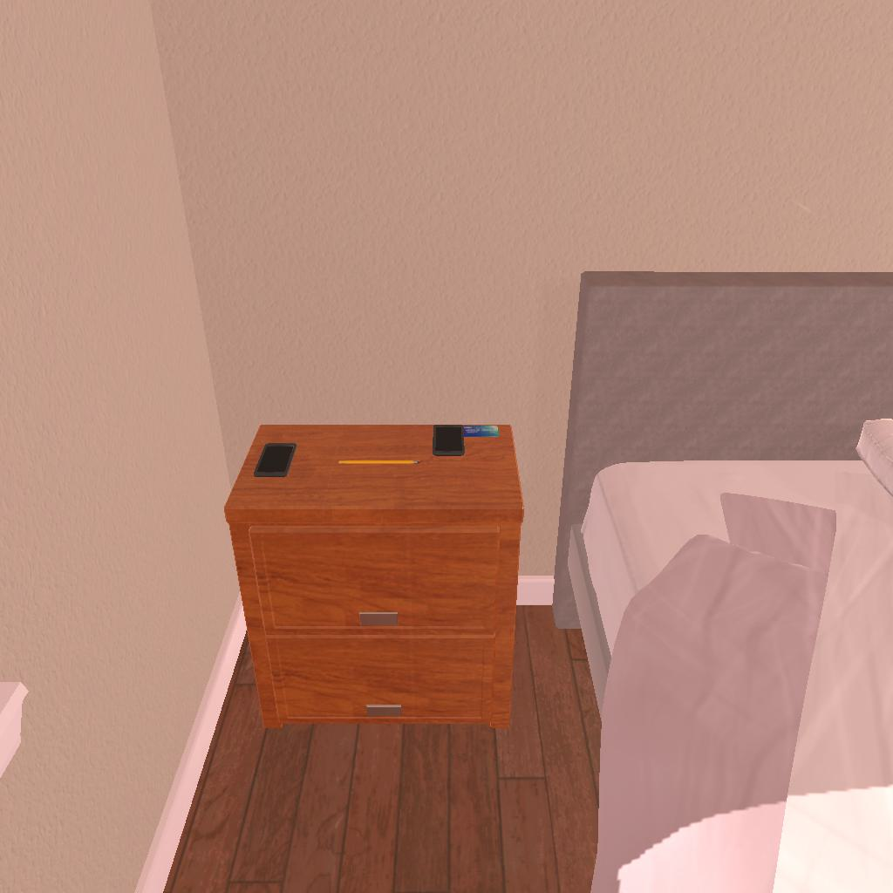

---------------------------------------------------------task: 6---------------------------------------------------------
--------------------------------------------------------------------------------------------------------------------------------------------------------------------
--------------------------------------------------------------------------------------------------------------------------------------------------------------------
Step:--------------------------------------------------------------------------3-------------------------------------------------------------------------------
----------------------------------------
VLM Prompt:
Image1:
Image2:
Image3:
**Instruction**
1. Analyze the provided images to identify all visible household objects and compare the difference between images (e.h. whether the object is opened or not and taken on hand or not), focusing on those relevant to the task description "put some cd on safe."
2. Use the analysis of images and the task hint "The agent must find an object of the desired type, pick it up, find the correct location to place it, and put it down there." to answer the question: what is the most reasonable action in the choices for the task description "put some cd on safe"?
3. Decide and write the answer using the template: The answer is: (i): , where i is the real number. If there is no desired object in images, search every place based on **Initial Observation** to find the object. And if no one is exactly correct, choose a similar answer.
**Initial Observation**
You are in the middle of a room. Looking quickly around you, you can see bed (1-2), dresser (1), sidetable (1-2), drawer (1-11), desk (1), garbagecan (1), safe (1)
**Answer Choices**
(1): go to bed 1
(2): go to dresser 1
(3): go to bed 2
(4): go to sidetable 1
(5): go to drawer 2
(6): go to sidetable 2
(7): go to drawer 3
(8): go to drawer 4
(9): go to desk 1
(10): go to garbagecan 1
(11): go to drawer 5
(12): go to drawer 6
(13): go to drawer 7
(14): go to drawer 8
(15): go to drawer 9
(16): go to drawer 10
(17): go to drawer 11
(18): go to safe 1
(19): close drawer 1
(20): take pillow 1 from drawer 1
(21): take cellphone 1 from drawer 1
(22): take cellphone 2 from drawer 1
(23): take creditcard 1 from drawer 1
(24): take pencil 1 from drawer 1
(25): examine drawer 1
**Answer**
Let's think step by step by following the instructions.
----------------------------------------
----------------------------------------
Original Response:
First, we need to analyze the images provided. In all three images, we can see a nightstand (also known as a sidetable) with two drawers. On top of the nightstand, there is a cellphone, a credit card, and a pencil. The first drawer appears to be open, and inside, there is one cellphone and one pillow. There are no visible CDs on the nightstand or inside the open drawer.
Based on the task description "put some cd on safe," we need to find a CD first. Since there is no CD visible in the images, we must search other places as per the initial observation. Among the given answer choices, there are multiple drawers listed, but no specific mention of where CDs might be found. Since we need to find a CD first, we should look in places where CDs are commonly kept, which could be in drawers or on a desk.
Considering the answer choices, the most reasonable action would be to go to the desk, as desks often have CDs around or in them. However, there is no specific action listed for "search desk 1" or "take cd from desk 1". The closest action that could potentially lead to finding a CD would be to go to the desk.
The answer is: (9): go to desk 1.
----------------------------------------
----------------------------------------
>>> Refine Original VLM Response and Get Pure Action: go to desk 1
----------------------------------------
-----------------------------------------------------------------
Running time: 14.554792165756226 seconds
Total Money: 2.6842100000000007
-----------------------------------------------------------------
-----------------------------------------------------------------
Text Observation:You arrive at loc 9. On the desk 1, you see a alarmclock 1, a bowl 1, a mug 1, a keychain 1, and a pencil 2.
-----------------------------------------------------------------
UNSUCCEED